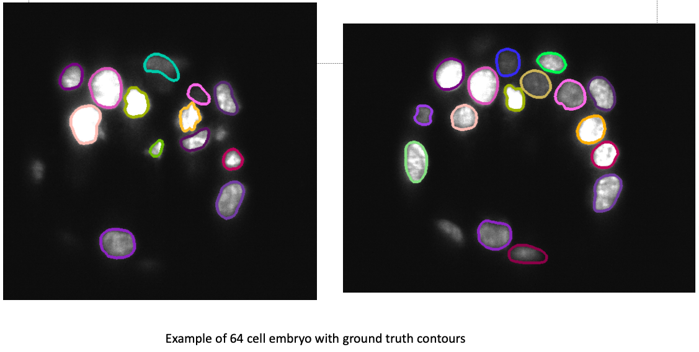

BlastoSPIM main entry page.
We introduce a new dataset and model of pre-implantation mouse embryos with complete 3D instance segmentation of nuclei. This is one of the largest and most complete datasets of its kind with over 570 high resolution images from a light sheet microscope. Each image has a resolution of roughly 64x512x512 and every nucleus in each image is fully annotated in 3D by a series of contours in each slice.
Using this dataset, we have built a model to accurately perform 3D instance segmentation and begun several investigations into the quantitative analysis of embryogenesis including fate specification, nuclear volume and shape variations, and embryo viability. This model is also the first step in lineage construction and opens the potential for a more direct exploration into early development.
Significant progress has been made in providing a means to segment nuclei in 2D [Cellpose 2.0] but there are very few biological datasets with complete ground truth instance segmentation of nuclei in 3D. This dataset can be used to help enable transfer learning for other applications via pre-training, fine-tuning, simulating, augmenting, evaluating etc.
Oscillation of nuclear size with cell cycle during development. We calculate each nucleus’s volume and its corresponding radius if it were a sphere of that volume. For a single embryo, for which we have annotated ground truth for 89 consecutive timepoints, we plot this effective radius over developmental time, with 15 minutes between each box. The median effective radius rises from about 6 μm at the early 32-cell stage to about 7 μm at the late 32-cell stage. During the transition from the 32-cell stage to the 64-cell stage, the width of the radius distribution grows, as some nuclei have divided while others haven’t. Typical nuclear radii fall in the range 6-6.5 μm as the embryo approaches the 64-cell stage.
Placeholder: Explanation of fucci_SOX_stack1 under construction.

Placeholder: Explanation of GT under construction.

Placeholder: Explanation of Sys under construction.
F24_10: Discussion under construction.
F24_8: Discussion under construction.
F39_117: Discussion under construction.